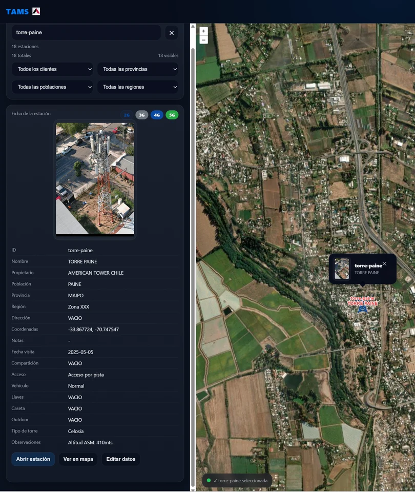
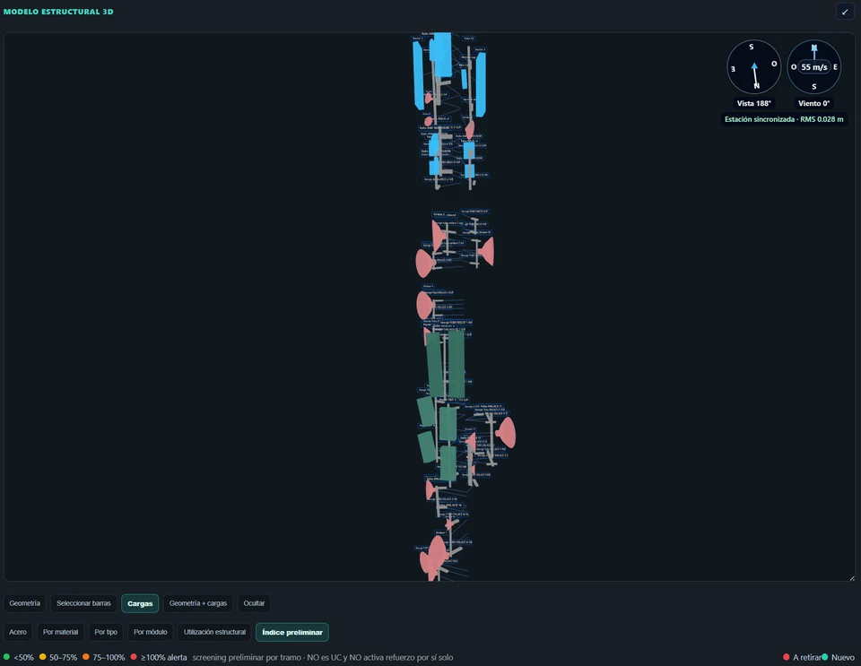
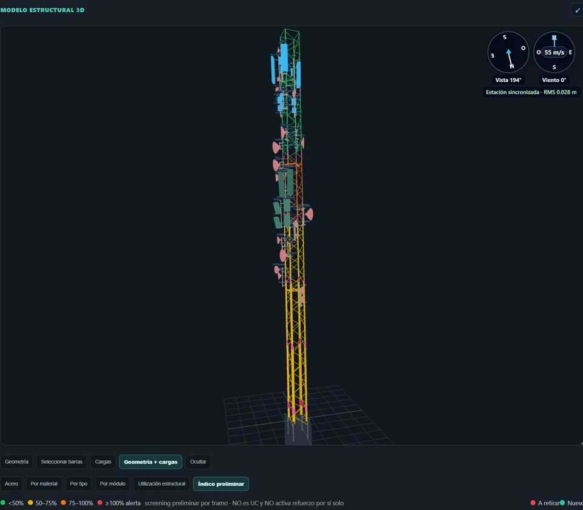
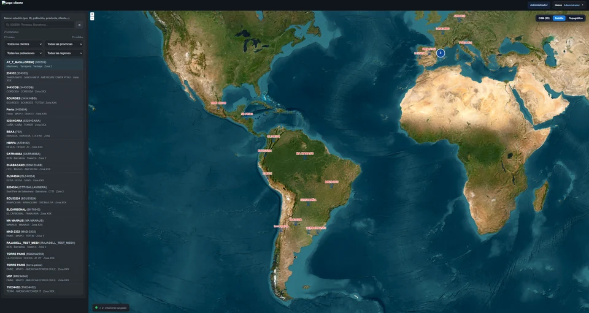
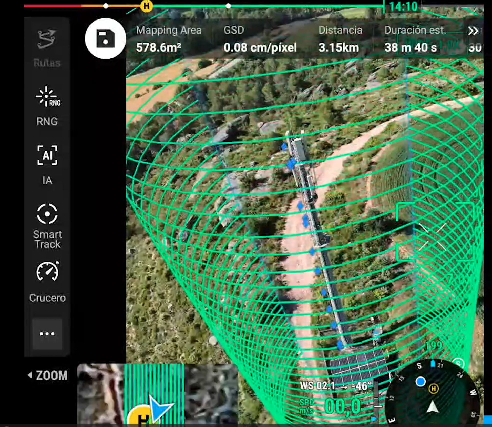

Torres de telecomunicaciones
Imágenes de la estructura metálica, las antenas y los equipos instalados para documentar el emplazamiento y apoyar su revisión técnica.
TORRES · ESTRUCTURAS · TELECOMUNICACIONES
Inspección técnica de infraestructuras y torres de telecomunicaciones.
Capturamos imágenes aéreas de torres, antenas, soportes y estructuras de difícil acceso. Organizamos las fotografías de conjunto y de detalle para que tu equipo pueda revisar los elementos y planificar el mantenimiento.
QUÉ INSPECCIONAMOS
Imágenes de la estructura metálica, las antenas y los equipos instalados para documentar el emplazamiento y apoyar su revisión técnica.
Fotografías de detalle de antenas, soportes y fijaciones para revisar visualmente su estado y disposición, según los puntos de interés acordados.
Inspección visual de cubiertas, fachadas e infraestructuras de difícil acceso.
DEL VUELO A LA REVISIÓN
Captura aérea, documentación e información visual en TAMS para apoyar el trabajo de tu equipo técnico.
Recorrido de vuelo alrededor de la torre para recoger imágenes desde distintos puntos.

Ampliar imagen ↗Localización de la estación y consulta de la información asociada.

Ampliar imagen ↗Representación de antenas, soportes y equipos en el modelo de la torre.

Ampliar imagen ↗Visualización de la geometría de la torre y de sus elementos instalados.
Consulta del modelo de la torre junto a las fotografías de detalle en TAMS, para relacionar los elementos con las imágenes capturadas.

Ampliar imagen ↗Localización y consulta de los emplazamientos desde una vista de conjunto.

RESULTADOS PARA TU EQUIPO
El alcance, los formatos y las condiciones se acuerdan para cada proyecto.
Hablemos de lo que necesitasCÓMO TRABAJAMOS
Definimos la ubicación de la torre o infraestructura, los elementos a revisar y la documentación que necesita tu equipo.
Estudiamos el entorno, el equipo y las condiciones de la operación.
Realizamos el trabajo de campo según el alcance acordado.
Organizamos las fotografías y la documentación visual; acordamos la entrega y, cuando corresponda, su consulta en TAMS.
HABLEMOS DE TU PROYECTO
Cuéntanos qué necesitas inspeccionar o digitalizar.
Te ayudamos a definir la captura y los resultados.